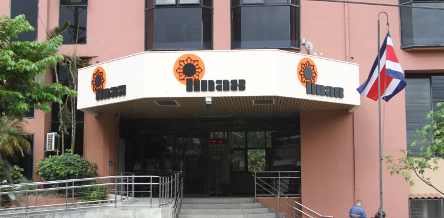
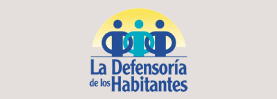
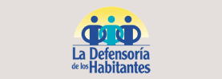

Sobre la institucion

En el IMAS trabajamos para resolver el problema de la pobreza extrema en el país, para lo cual planeamos, dirigimos, ejecutamos y controlamos un plan nacional destinado a dicho fin. La Ley de creación del IMAS (Ley 4760) indica que "El IMAS tiene como finalidad resolver el problema de la pobreza extrema en el país, para lo cual deberá planear, dirigir, ejecutar y controlar un plan nacional destinado a dicho fin. Para ese objetivo utilizará todos los recursos humanos y económicos que sean puestos a su servicio por los empresarios y trabajadores del país, instituciones del sector público nacionales o extranjeras, organizaciones privadas de toda naturaleza, instituciones religiosas y demás grupos interesados en participar en el Plan Nacional de Lucha contra la Pobreza". Enfocamos los recursos humanos y económicos que percibimos de empresas, de la fuerza trabajadora del país, del sector público nacional y extranjero, de organizaciones privadas, de instituciones religiosas y de otros grupos interesados, a trabajar en el plan nacional de lucha contra la pobreza.
Mision:
“El IMAS brinda y coordina servicios de protección y promoción social, de manera inclusiva y solidaria, para el desarrollo de la población en situación de pobreza y pobreza extrema, mediante la ejecución y coordinación de programas y proyectos sociales y económicos, desde un abordaje multidimensional.”
Vision:
“El IMAS será la entidad que lidera técnicamente la política social del país y articula acciones públicas y privadas, que respondan oportunamente con servicios innovadores que permiten mejorar las condiciones de vida y potenciar las capacidades de las personas en situación de pobreza y pobreza extrema.”
Valores:
- Compromiso y calidad: actitud positiva y dedicada del recurso humano institucional, con la consecución de la excelencia del servicio que se presta a la población objetivo en atención de sus necesidades.
- Equidad: atender las necesidades e intereses de las personas de acuerdo con sus condiciones y diferencias, especialmente de aquellas que están en desventaja social.
- Igualdad: proporcionar un trato justo y equitativo a todas las personas, sin tener ningún tipo de discriminación por sus diferencias
- Innovación: capacidad para identificar e implementar nuevos instrumentos, métodos y tecnologías, que contribuyan a fortalecer la capacidad de trabajo de la institución, ofreciendo bienes y servicios eficientes, de calidad e inclusivos en el marco del valor público que debe atender el IMAS.
- Integralidad: gestión orientada hacia un abordaje comprehensivo y multidimensional de los fenómenos sociales que determinan las condiciones de vida de la población objetivo del IMAS
- Solidaridad: actuar en favor de los demás, especialmente ante las dificultades o necesidades, promoviendo la cooperación y empatía y aportando a la construcción de una institución más resiliente y equitativa.
- Transparencia: actuación sujeta a la ética, la legalidad y la técnica garantiza claridad en las acciones y decisiones, libre acceso a la información y rendición de cuentas.
Mas acerca del IMAS
- Sobre la institucion
- Leyes y normativas
- Consejo Directivo y equipo gerencial
- Organigrama
- SINIRUBE
- Sistema Nacional de Cuidados y Apoyos para Adultas y personas adultas mayores en situacion de dependencia
- Contaloria de servicios
- ¿Cómo se financia el IMAS?
- Comisión Institucional en Materia de Discapacidad
 

DOCUMENTOS
Código de Ética y Conducta IMAS 2020
Ley 4760 Ley de Creación del Instituto Mixto de Ayuda Social